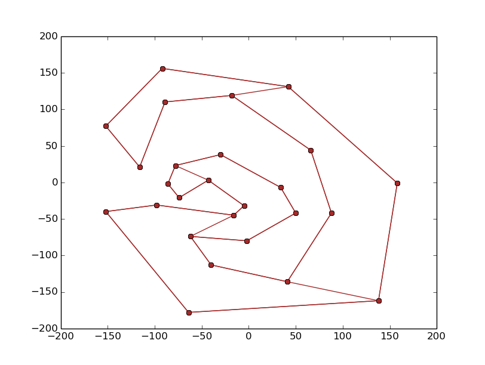

This project is a part of the coursework for the course Selected Toipcs in Computer Science (CS F441) under the guidance of Dr. Tathagat Ray.
DCEL is a datastructure used to represent a planar subdivision. The main idea in a DCEL is edges are oriented anti-clockwise inside each face. Since an edge borders two faces, each edge is replaced by 2 half edges, one for each face.
Monotonizing a polygon refers to converting a polygon into a y-monotone polygon. This is achieved by constructing a priority queue Q on the vertices and then handling the various types of vertices encountered. The types of vertices that will be encountered are Start Vertex, Split Vertex, Merge Vertex, Regular Vertex.
Algorithm:
MAKE_MONOTONE(Point_set): 1. Construct a priority queue Q on the vertices of P using their Y coordinates as priority. If 2 points have same Y coordinates, then the one with smaller x coordinates has a higher priority. 2. Initiate an empty balanced binary search tree T. 3. while Q is not empty: 4. do remove the vertex vi with the highest priority from Q. 5. Call the appropriate procedure to handle the vertex depending on its type. Separate routines will handle a start, split, merge and regular vertex.
Triangulate polygon takes y-monotone polygon stored in DCEL and returns its triangulation.
TRIANGULATE_MONOTONE_POLYGON(P): 1. Merge the vertices on the left chain and the vertices on the right chain of P into one sequence, sorted for decreasing Y coordinate. If two vertices have same Y- coordinate, then the left one comes first.Let u1,u2,u3...un. 2. initialize an empty stack S and push u1 and u2 into it. 3. for j<-3 to n-1: 4. do if uj and the vertex on top are in different chains 5. then pop all vertices from S 6. insert into D, a diagonal from uj to each of the popped vertex except the last one (bottom of stack). 7. push u(j-1) and uj into S 8. else pop one vertex from S 9. pop the other vertices from S, as long as the diagonals from uj to them are inside P. Insert those diagonals into P. Push the first vertex that has been initially popped, back into S. 10. Push uj into S. 11. Add diagonals from un to all vertices in stack except the first and last vertices.
The balanced binary search tree was implemented using the Standard Template Library (STL). The map data structure was used to implement the binary search tree. The ordering of the binary search tree can be decided by exploiting two facts - firstly, when an edge is inserted its ordering with respect to existing edges does not change until the existing edge is removed and secondly, edges are inserted in descending y-coordinate order of top edge. Thus, if the starting point of the edge lies to the left of an existing edge, the corresponding leaf will also lie to the left of the leaf containing the existing edge. The edge directly to the left of a vertex can be found out by using the lower bound function.
